¿De dónde surge el proyecto?
Proyecto académico desarrollado en el marco de la materia Unidad de Proyecto 4, enfocado en el diseño de un sistema de cartelería para mejorar la visibilidad del Centro Cultural Artesano y fortalecer su vínculo con los vecinos del barrio Peñarol. Surge a partir de su baja visibilidad dentro de la comunidad y la falta de compromiso de algunos vecinos en sus actividades, lo que refleja una desconexión entre la oferta cultural del centro y los residentes del barrio.
El sistema consta de dos tipos de cartelería. La cartelería informativa, ubicada en puntos centrales del barrio Peñarol y los barrios adyacentes, comunica la agenda y actividades del centro. La cartelería indicativa, ubicada en las avenidas principales, indica, a través de su forma de flecha, la dirección del centro cultural y los minutos caminando que faltan para llegar.
"¿Cómo hacer que el Centro Cultural Artesano se sienta parte del barrio y el barrio se sienta parte del centro?"
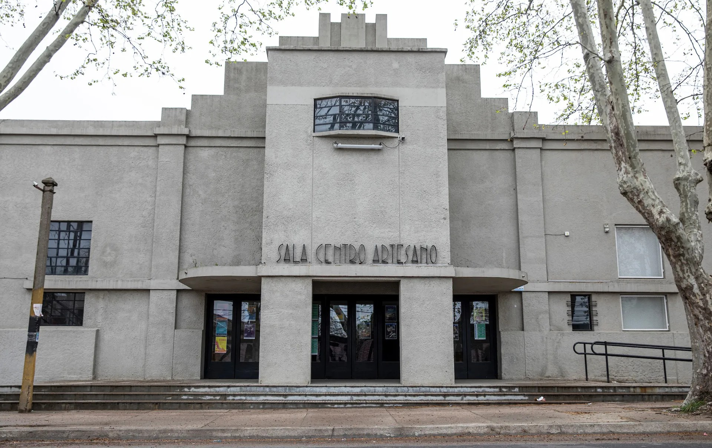
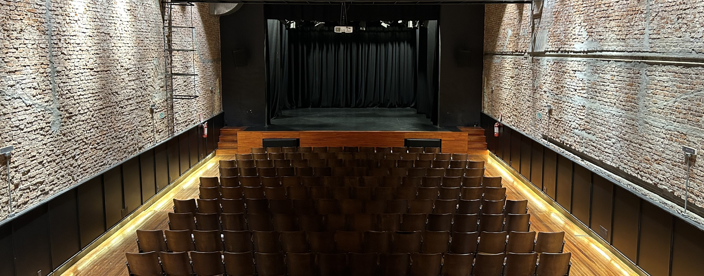
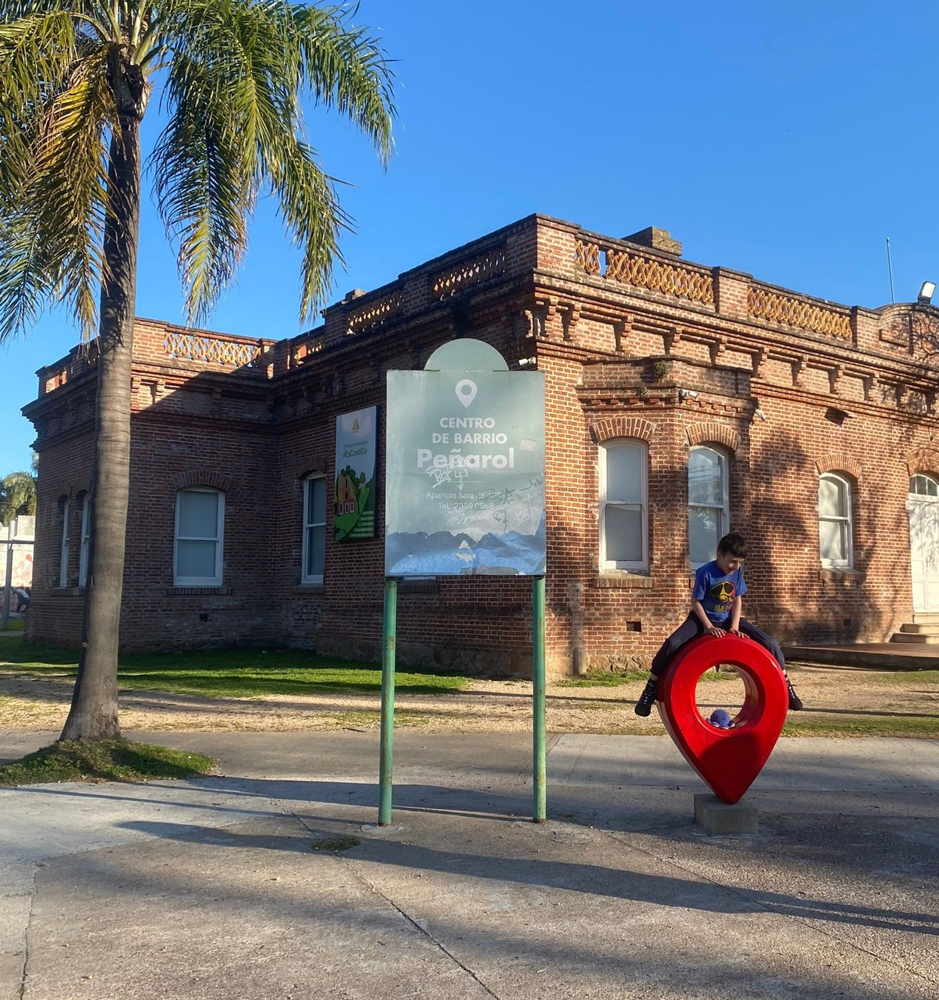
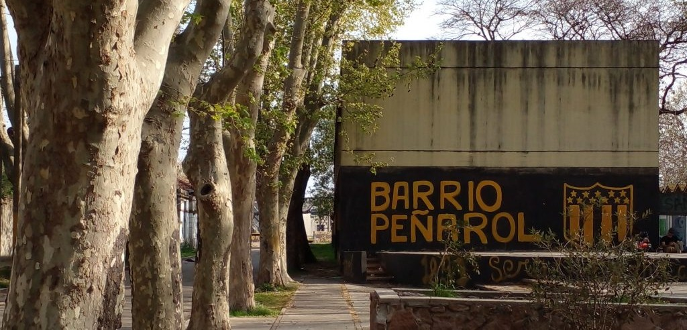
Cómo se llegó a la solución
El proceso recorrió cuatro etapas de forma iterativa, con foco en el vecino real del barrio Peñarol. Pasá el cursor sobre cada etapa para más detalle.
Anatomía del sistema
Cada pieza fue diseñada considerando su producción, resistencia a la intemperie y facilidad de mantenimiento. Las vistas incluyen alzados, plantas y explotadas de ensamblaje.
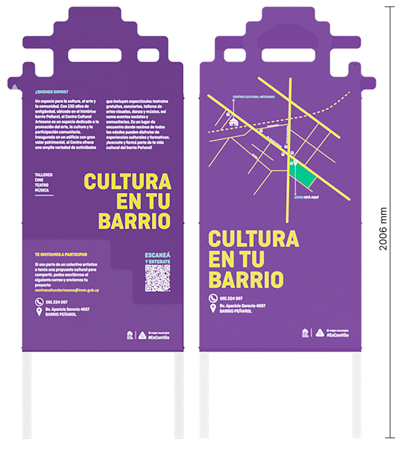

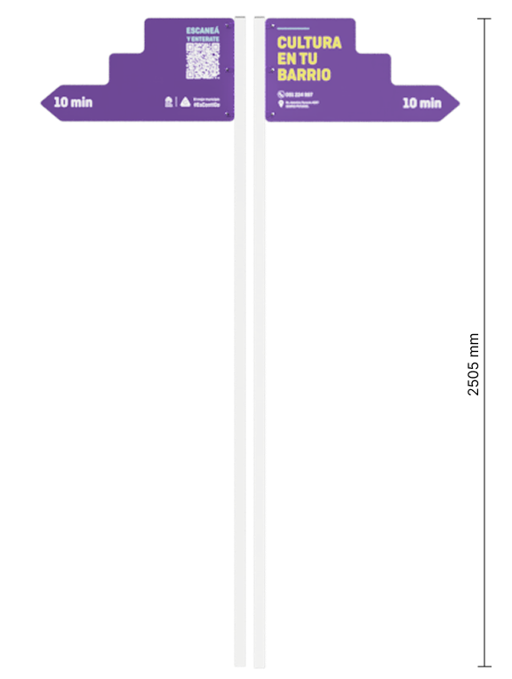

El lenguaje visual del sistema
La identidad visual toma elementos presentes en la identidad del Centro Cultural Artesano, buscando mantener una conexión con la institución. El violeta del logo se tomó como color principal y se combinó con amarillo para generar contraste, mientras que el celeste y el blanco completan la paleta.
La forma del logo del Centro Cultural Artesano también se abstrajo y se incorporó como recurso gráfico dentro del sistema, apareciendo tanto en los elementos de la cartelería como en la estructura del cartel informativo.
5 min caminando →
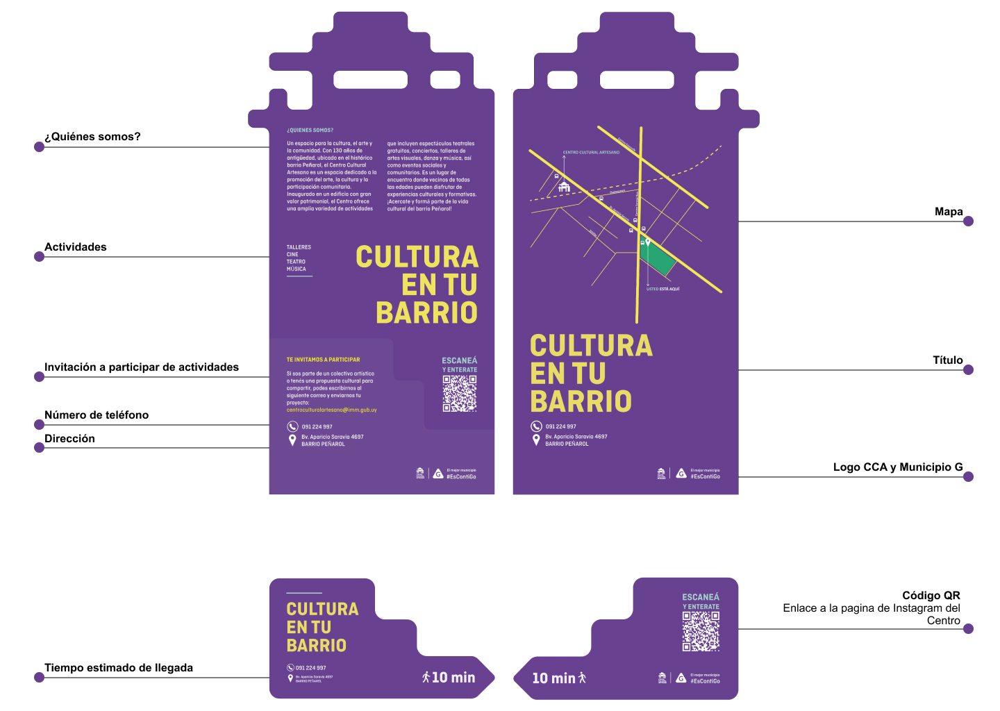
El sistema en el espacio
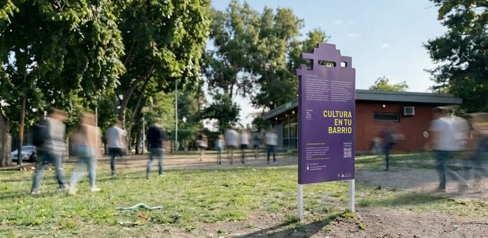
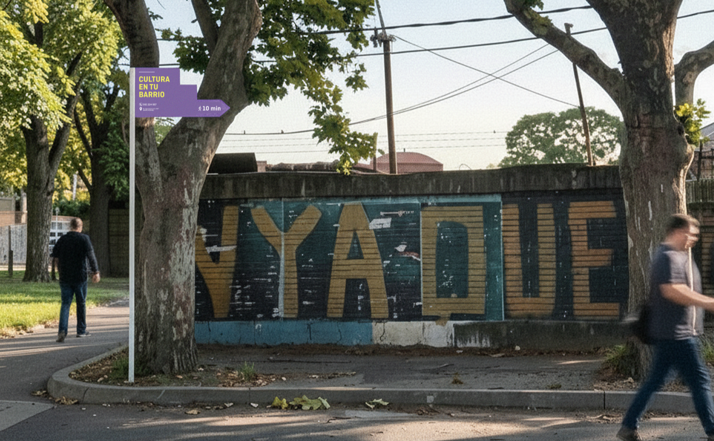
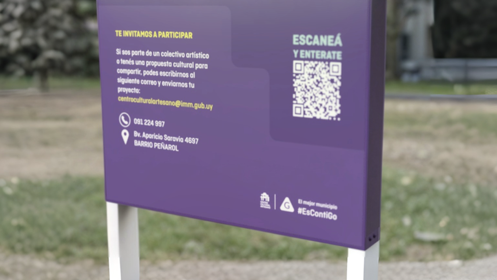
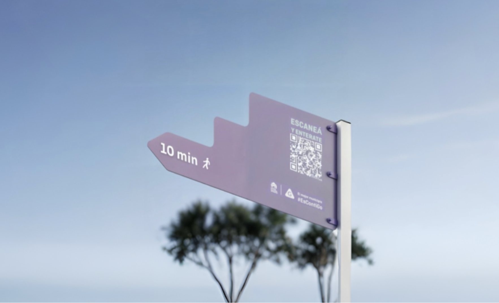
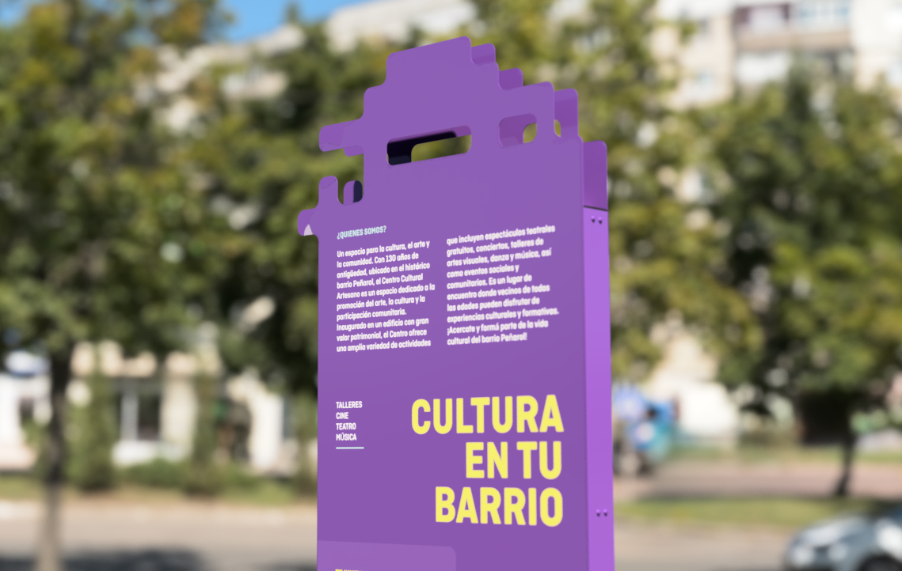
Lo que nos dejó este proyecto
"Este proyecto nos permitió poner en práctica distintas herramientas de diseño trabajando sobre una necesidad concreta del barrio. También nos ayudó a entender la importancia de mantener una relación entre la identidad de una institución y las distintas piezas que forman parte de un sistema de comunicación. A lo largo del proceso fuimos ajustando las propuestas a partir de las correcciones y del análisis del contexto, hasta llegar a una solución que respondiera a los objetivos planteados." - Fragmento de las conclusiones finales.